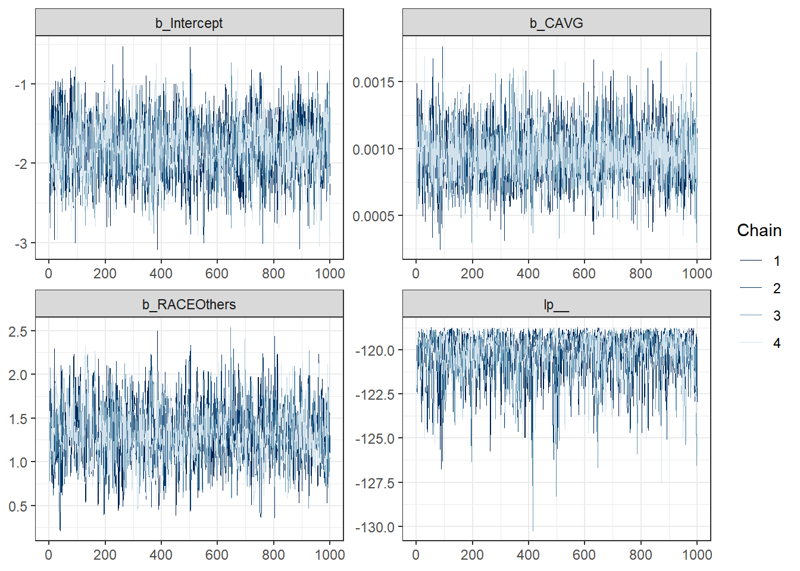
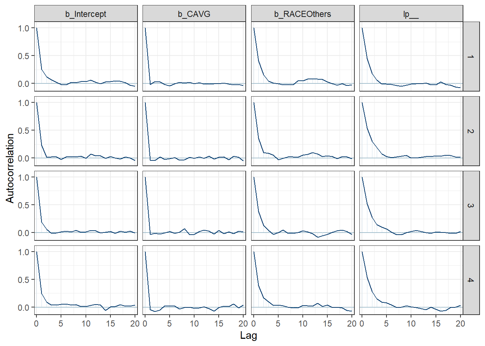
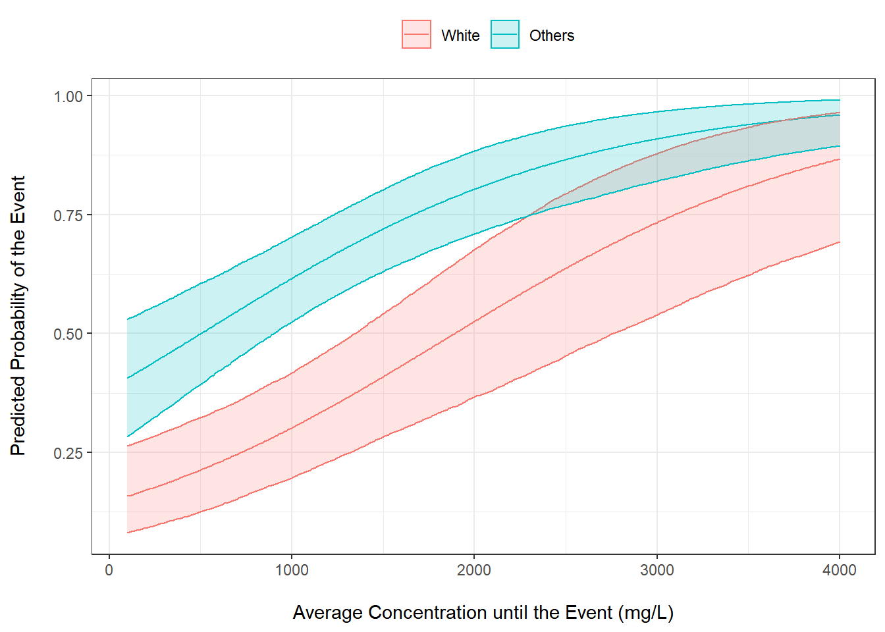
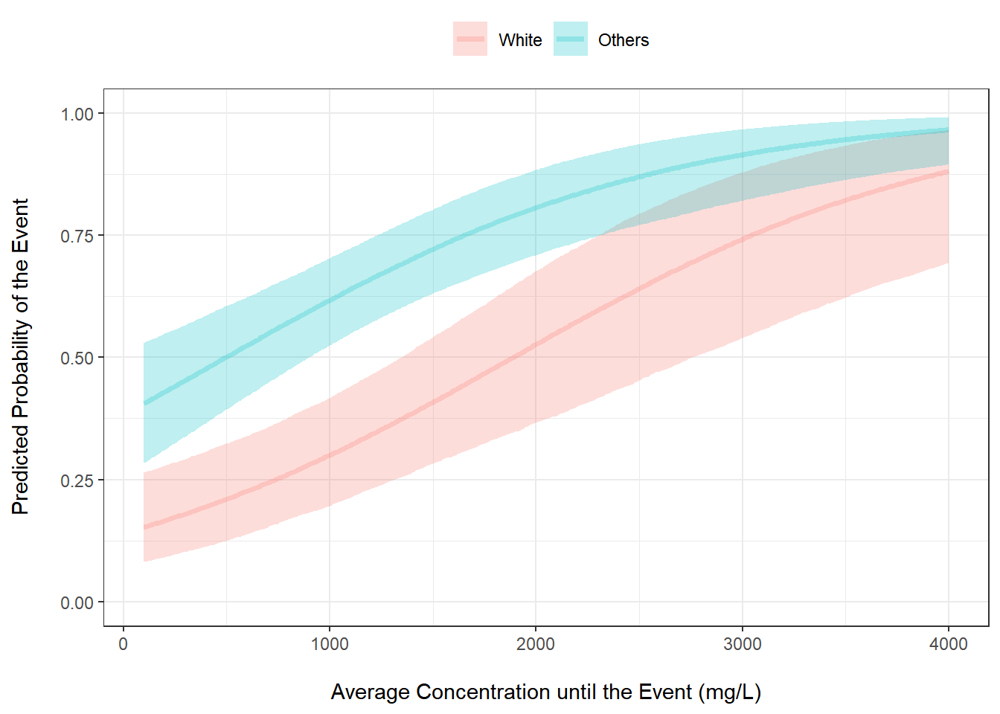

library(summarytools)
library(tidyverse)
library(brms)
library(bayesplot)
library(tidybayes)
library(gridExtra)
library(patchwork) Logistic Regression Hands-On With Solution
Load Relevant Libraries
A simulated dataset for this exercise simlrcovs.csv was developed. It has the following columns:
- DOSE: Dose of drug in mg [20, 50, 100, 200 mg]
- CAVG: Average concentration until the time of the event (mg/L)
- ECOG: ECOG performance status [0 = Fully active; 1 = Restricted in physical activity]
- RACE: Race [1 = Others; 2 = White]
- SEX: Sex [1 = Female; 2 = Male]
- BRNMETS: Brain metastasis [1 = Yes; 0 = No]
- DV: Event [1 = Yes; 0 = No]
Import Dataset
# Read the dataset
hoRaw <- read.csv("data/simlrcovs.csv") %>%
as_tibble()Data Processing
Convert categorical explanatory variables to factors
hoData <- hoRaw %>%
mutate(ECOG = factor(ECOG, levels = c(0, 1), labels = c("Active", "Restricted")),
RACE = factor(RACE, levels = c(0, 1), labels = c("White", "Others")),
SEX = factor(SEX, levels = c(0, 1), labels = c("Male", "Female")),
BRNMETS = factor(BRNMETS, levels = c(0, 1), labels = c("No", "Yes")))
hoData# A tibble: 200 x 7
DOSE CAVG ECOG RACE SEX BRNMETS DV
<int> <dbl> <fct> <fct> <fct> <fct> <int>
1 20 203. Active White Female Yes 0
2 20 202. Restricted White Female No 0
3 20 287. Restricted Others Female No 0
4 20 174. Restricted Others Male Yes 0
5 20 270. Active Others Male Yes 0
6 20 265. Active Others Female No 1
7 20 206. Restricted Others Female No 0
8 20 253. Active Others Male No 1
9 20 186. Active White Male No 0
10 20 186. Restricted Others Female No 1
# ... with 190 more rowsData Summary
print(summarytools::dfSummary(hoData,
varnumbers = FALSE,
valid.col = FALSE,
graph.magnif = 0.76),
method = "render")Data Frame Summary
hoDataDimensions: 200 x 7
Duplicates: 0
| Variable | Stats / Values | Freqs (% of Valid) | Graph | Missing | ||||||||||||||||||||||||||||
|---|---|---|---|---|---|---|---|---|---|---|---|---|---|---|---|---|---|---|---|---|---|---|---|---|---|---|---|---|---|---|---|---|
| DOSE [integer] |
|
|
 |
0 (0.0%) | ||||||||||||||||||||||||||||
| CAVG [numeric] |
|
200 distinct values |  |
0 (0.0%) | ||||||||||||||||||||||||||||
| ECOG [factor] |
|
|
 |
0 (0.0%) | ||||||||||||||||||||||||||||
| RACE [factor] |
|
|
 |
0 (0.0%) | ||||||||||||||||||||||||||||
| SEX [factor] |
|
|
 |
0 (0.0%) | ||||||||||||||||||||||||||||
| BRNMETS [factor] |
|
|
 |
0 (0.0%) | ||||||||||||||||||||||||||||
| DV [integer] |
|
|
 |
0 (0.0%) |
Model Fit
With all covariates except DOSE (since we have exposure as a driver)
hofit1 <- brm(DV ~ CAVG + ECOG + RACE + SEX + BRNMETS,
data = hoData,
family = bernoulli(),
chains = 4,
warmup = 1000,
iter = 2000,
seed = 12345,
refresh = 0,
backend = "cmdstanr")
# freqhofit <- glm(DV ~ CAVG + ECOG + RACE + SEX + BRNMETS,
# family = "binomial",
# data = hoData)
# summary(freqhofit)Model Evaluation
summary(hofit1) Family: bernoulli
Links: mu = logit
Formula: DV ~ CAVG + ECOG + RACE + SEX + BRNMETS
Data: hoData (Number of observations: 200)
Draws: 4 chains, each with iter = 2000; warmup = 1000; thin = 1;
total post-warmup draws = 4000
Population-Level Effects:
Estimate Est.Error l-95% CI u-95% CI Rhat Bulk_ESS Tail_ESS
Intercept -1.67 0.44 -2.56 -0.84 1.00 4103 3331
CAVG 0.00 0.00 0.00 0.00 1.00 4075 2528
ECOGRestricted -0.47 0.34 -1.14 0.20 1.00 3892 2734
RACEOthers 1.45 0.36 0.76 2.18 1.00 3795 2389
SEXFemale -0.21 0.32 -0.84 0.41 1.00 3662 2737
BRNMETSYes 0.20 0.37 -0.51 0.93 1.00 4029 2623
Draws were sampled using sample(hmc). For each parameter, Bulk_ESS
and Tail_ESS are effective sample size measures, and Rhat is the potential
scale reduction factor on split chains (at convergence, Rhat = 1).fixef(hofit1) Estimate Est.Error Q2.5 Q97.5
Intercept -1.6728321010 0.4356726064 -2.557614750 -0.840452675
CAVG 0.0009840576 0.0002037094 0.000591061 0.001394632
ECOGRestricted -0.4703165395 0.3379044752 -1.136986750 0.199271800
RACEOthers 1.4457574770 0.3599390856 0.756435900 2.179535750
SEXFemale -0.2140195943 0.3187733320 -0.840274025 0.406492000
BRNMETSYes 0.2011028320 0.3668881875 -0.506824900 0.928938150Final Model
hofit2 <- brm(DV ~ CAVG + RACE,
data = hoData,
family = bernoulli(),
chains = 4,
warmup = 1000,
iter = 2000,
seed = 12345,
refresh = 0,
backend = "cmdstanr")Summary
summary(hofit2) Family: bernoulli
Links: mu = logit
Formula: DV ~ CAVG + RACE
Data: hoData (Number of observations: 200)
Draws: 4 chains, each with iter = 2000; warmup = 1000; thin = 1;
total post-warmup draws = 4000
Population-Level Effects:
Estimate Est.Error l-95% CI u-95% CI Rhat Bulk_ESS Tail_ESS
Intercept -1.81 0.37 -2.55 -1.10 1.00 1962 2405
CAVG 0.00 0.00 0.00 0.00 1.00 4324 3163
RACEOthers 1.33 0.33 0.67 2.02 1.00 1732 1299
Draws were sampled using sample(hmc). For each parameter, Bulk_ESS
and Tail_ESS are effective sample size measures, and Rhat is the potential
scale reduction factor on split chains (at convergence, Rhat = 1).fixef(hofit2) Estimate Est.Error Q2.5 Q97.5
Intercept -1.8104092685 0.3672660010 -2.5532470000 -1.095532250
CAVG 0.0009570336 0.0002078047 0.0005667638 0.001378035
RACEOthers 1.3294440837 0.3334109622 0.6721790500 2.015080000Model Convergence
hopost <- as_draws_df(hofit2, add_chain = T)
mcmc_trace(hopost[, -4],
facet_args = list(ncol = 2)) +
theme_bw()
mcmc_acf(hopost[, -4]) +
theme_bw()
Visual Interpretation of the Model (Bonus Points!)
We can do this two ways.
Generate Posterior Probabilities Manually
Generate posterior probability of the event using the estimates and their associated posterior distributions
out <- hofit2 %>%
spread_draws(b_Intercept, b_CAVG, b_RACEOthers) %>%
mutate(CAVG = list(seq(100, 4000, 10))) %>%
unnest(cols = c(CAVG)) %>%
mutate(RACE = list(0:1)) %>%
unnest(cols = c(RACE)) %>%
mutate(PRED = exp(b_Intercept + b_CAVG * CAVG + b_RACEOthers * RACE)/(1 + exp(b_Intercept + b_CAVG * CAVG + b_RACEOthers * RACE))) %>%
group_by(CAVG, RACE) %>%
summarise(pred_m = mean(PRED, na.rm = TRUE),
pred_low = quantile(PRED, prob = 0.025),
pred_high = quantile(PRED, prob = 0.975)) %>%
mutate(RACE = factor(RACE, levels = c(0, 1), labels = c("White", "Others")))Plot The Probability of the Event vs Average Concentration
out %>%
ggplot(aes(x = CAVG, y = pred_m, color = factor(RACE))) +
geom_line() +
geom_ribbon(aes(ymin = pred_low, ymax = pred_high, fill = factor(RACE)), alpha = 0.2) +
ylab("Predicted Probability of the Event\n") +
xlab("\nAverage Concentration until the Event (mg/L)") +
theme_bw() +
scale_fill_discrete("") +
scale_color_discrete("") +
theme(legend.position = "top")
Generate Posterior Probabilities Using Helper Functions from brms and tidybayes
Generate posterior probability of the event using the estimates and their associated posterior distributions
out2 <- hofit2 %>%
epred_draws(newdata = expand_grid(CAVG = seq(100, 4000, by = 10),
RACE = c("White", "Others")),
value = "PRED") %>%
ungroup() %>%
mutate(RACE = factor(RACE, levels = c("White", "Others"),
labels = c("White", "Others")))Plot The Probability of the Event vs Average Concentration
out2 %>%
ggplot() +
stat_lineribbon(aes(x = CAVG, y = PRED, color = RACE, fill = RACE),
.width = 0.95, alpha = 0.25) +
ylab("Predicted Probability of the Event\n") +
xlab("\nAverage Concentration until the Event (mg/L)") +
theme_bw() +
scale_fill_discrete("") +
scale_color_discrete("") +
theme(legend.position = "top") +
ylim(c(0, 1))